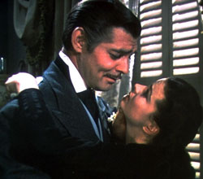
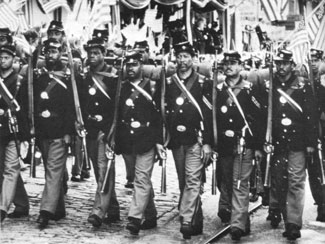

|
Flora Cameron, the attractive daughter of a slaveholder
whose cotton business has been ruined by the Civil War,
pulls her bucket from the small, bubbling spring in the
thick woods and sits back on an oversized log, playfully
trying to coax a squirrel down from a tree. The squirrel,
sensing danger somewhere, darts its eyes back and forth. A
few yards away, Gus, an evil-looking black soldier stationed
in the area, stares at her lustfully, his shirt open over
his bare chest. Flora, the quintessential Southern belle,
catches sight of him from the corner of her eye and becomes
visibly scared. Trying to disregard his presence, she gets
up and starts to walk slowly through the woods to home and
safety. Gus follows. Flora fears Gus because during the past
few weeks he and other blacks have constantly harassed her
and her family. Gus catches her and grabs her arm, pulling
her towards him, and tells her he isn't married. His eyes
wander over her body. She slaps him, pushes him down, and
runs away, terror in her eyes.
The camera follows Flora as she runs through the
sun-drenched forest, a lithe, terrified nymph with a
sex-crazed black soldier in hot pursuit. Flora loses her way
and winds up on the top of a cliff as Gus climbs towards her
over the rocks--obviously intent on raping her. She gestures
for him to back up and looks down over the edge of the
cliff. She must either submit to Gus's ravenous sexual
advances or leap from the cliff. Her thin alabaster arms
flail in indecision. She is gorgeous in the warm morning
sunlight. Gus, heavy beads of sweat on his forehead, hands
extended to grab her, is a sadistic creature coming out of
the rocks to seize carnal satisfaction. Unwilling to submit
to a black man, with death the only option, Flora leaps.
The portrayal of Gus, the lustful black soldier, was just
one of the historical distortions in The Birth of a
Nation, a 1915 movie that combined many of the
misinterpretations of history in films about the Civil War
that Hollywood studios have produced over the years.
Hollywood has often done rewrites of history quickly and
with little or no regard for the actual story. Even in their
wildest dreams, the 1930s gangster couple Clyde Barrow and
Bonnie Parker never looked as handsome as Warren Beatty and
Faye Dunaway. Probably none of history's crude and barbarous
pirates had the dashing personality of Errol Flynn or Yul
Brynner. The tough, grizzled miners who rushed to California

John Wayne
|
in 1849, or to the gold and silver strikes that followed in
other Western states in the following decades, rarely exuded
the elan of Joel McCrea or Randolph Scott. Few World War II
soldiers fought with the swagger of John Wayne. Hollywood
hopelessly romanticized Billy the Kid, who in real life was
not charming at all. Robert Stroud, the idealized "birdman"
of Alcatraz, in reality was, his guards said, a psychotic.
There were few cowards in Hollywood's version of World War
II; most screen prostitutes had hearts of gold; pioneers in
westerns were courageous. Indians, of course, were portrayed
as howling savages.
Film has always been casual in its presentation of
history. Driven by commercial considerations, the need for
wide audience appeal, producers consistently distorted and
sanitized the past. This has almost always been true of war
movies, such as The Bridge on the River Kwai, a
heroic and very successful 1957 British film about World War
11 that not only paid little attention to the truth
concerning the construction of the bridge, but even put it
over the wrong river. And such mangling has occurred, among
the countless instances that might be named, in the
conspiracy-laden JFK, the heavily slanted character
portrayals in Nixon, the inaccuracies concerning
blacks in Mississippi Burning, the fabricated scenes
in Silkwood and George Wallace and the
invented characters and inaccurate events in The
Hurricane.
Sometimes little of true history is left but the fact
that the character once lived. In the Civil War western saga
Arizona Bushwhackers, screenwriters placed Southern
guerrilla leader William Quantrill in Arizona, where he
never visited, a year after his death in 1865. Hollywood has
also loved the "composite character" in historical movies, a
character that never existed as such but embodies a mix of
people who might have done so, created in order to move the
plot along. And of course historical movies need invented
love stories, whether it is the heavy breathing between
Daniel Day-Lewis and Madeleine Stowe in the French and
Indian War in The Last of the Mohicans or the teenage
lovers reaching their own high tide in Titanic.
Most screenwriters and directors respond to such
criticism with a shrug and an insistence that the "spirit"
of the times or characters is more important than fidelity
to fact. Filmmakers dealing with contemporary life sometimes
have the same attitude. For example, when the acclaimed 1999
film Boys Don't Cry--the story of a real person, a
woman who passed herself off as a man--was criticized for
its inaccuracies, the director, Kim Peirce, responded that
she could not let the facts get in the way of her feelings.
"You can change facts. You can change characters. You can
change everything in search of the truth," she said.
Historians, of course, are concerned about the way
history is battered in film and fiction and how
screenwriters and novelists make history fit their stories,
not the other way around. "The past is up for grabs for
creative people," said historian David McCullough (whose
biography Truman was turned into an HBO movie),
speaking of screenwriters' rather loose adherence to
historical fact. Simon Scharnal, writing about the movie
version of a work by Sir Walter Scott, argued that the
tragedy is not only that history is rewritten and
transformed, but that a nation's people absorb and believe
the history that is presented in novels and movies instead
of the actual history.
Fictional stories or legends can become accepted as
history. Novels and films about history, whether
Ivanhoe in the nineteenth century or Gone With the
Wind in the twentieth, become history because people
accept their plotlines and characterizations. Or, as
historian Jill Lepore said about armed conflict, "how wars
are remembered can be just as important as how they were
fought and described."'
Few periods in American history have been as
romanticized, eulogized and hopelessly distorted through
film as the Civil War. From the early silent Civil War
movies, which depicted slaves as "happy darkies" eager to
help their owner save his plantation and defeat the Yankees,
to silly television series like The Secret Diary of
Desmond Pfeiffer, the UPN comedy series about Abraham
Lincoln and his fictional black English butler, the real
story of the greatest conflict in American history has been
revised so many times that a great many Americans whose
knowledge of the war comes mainly from movies or television
necessarily know little of the truth. Worse, they have
little understanding of how the conflict changed the course
of American life. The movie view was tainted, even though it
continually trumpeted the spirit of the American people,
Northerners and Southerners alike. Although it significantly
affected the way we saw ourselves for generations--as a
brave and good people--it greatly exacerbated the tragic
divisions between the races.
The foundation for Hollywood's unreal reel Civil War, a
moonlight-and-magnolias saga that featured trees dripping
with Spanish moss, gentlemen drinking mint juleps on the
veranda, women prettifying themselves for the ball and
countless soldiers becoming instant heroes, was laid in
|

Gone With the Wind
heavily romanticizes the Civil War.
|
cinema's infancy, the silent-movie era, and carried on
through the 1930s. Although there was little interest in
such films following World War I, audiences again went to
see them throughout the 1930s, a decade that culminated in
the greatest Civil War film of all, Gone With the
Wind. World War II temporarily dampened Civil War-film
fervor in the 1940s, but the blue and the gray began to
clash again regularly on screen in the mid-1950s. Civil War
stories have been part of American film and television ever
since.
Right after World War II, writers in film and television
found a rich new field for Civil War stories, one that would
last through the 1970s--the already long-established
western. The very first feature film, The Great Train
Robbery, in 1903, was a western, and Hollywood's
hundreds of subsequent shoot-'em-ups had thrilled audiences
for decades. Then, in the late 1940s, writers began to put
blue and gray army veterans into western storylines that
stretched from Dallas to Deadwood. Billy Yank and Johnny Reb
now fought together to ward off a new foe of the American
people, the Indians.
It was not until the post-Civil Rights era of the 1970s
that there occurred a radical departure from the deeply
entrenched myths concerning the American nineteenth century,
the entire period extending from the antebellum South
through the Civil War and into Reconstruction. That
departure was signaled most notably by the 1977 television
miniseries Roots, which led an assault on all the
tried-and-true legends Hollywood had created and re-created
over the years. Roots became the foundation for numerous
fresh analyses of slavery, the war and the war's major
figures. Then, in 1989, came Glory, the (mostly) true
story of one of the many all-black regiments which fought
|

Glory's portrayal of the
Massachusetts 54th Colored Infantry
Regiment's departure from Boston.
|
gallantly for the Union. Glory was followed by
Gettysburg and, in 1996, Andersonville, about
the dreaded Confederate prison camp in Georgia. There were
new interpretations of the Civil War era and a sharp change
in the American cultural climate. Another change was the
appearance of thousands of "reenactors." These were
civilians who dressed in blue and gray and re-created Civil
War battles each year, bringing back to life in breathtaking
fashion bayonet charges, artillery barrages, and cavalry
raids. Directors began using reenactors in movies because
they already knew the material and had the uniforms. Unlike
earlier films, these movies had dramatic battle scenes that
gave them an air of realism. In the same period, PBS aired
Ken Burns's well-received, heavily researched, nine-part
documentary on the war, which presented slavery and black
soldiers in a more well-rounded way. Impressed by its
success, several cable television networks soon presented
similar, docudrama-style series that seemed to add balance
to long-held interpretations of the war.
However, these revisionist films did not emerge until
seven long decades after the very first, silent Civil War
films. This was mainly because the distortions presented in
the approximately five hundred silent films on the war, all
from the moonlight-and-magnolias school, came to be accepted
as fact by later filmmakers. For example:
1. Southerners, who started the war, were always
portrayed as heroic underdogs. Yet until the last year of
the war there remained a real prospect of Confederate
victory. What ultimately proved decisive was the South's
loss of three key battles in the summer and fall of 1864. In
early August, U.S. naval commander David Farragut led
fifteen ships into Alabama's Mobile Bay; the attack resulted
in the destruction of four Confederate ships and the
securing of the region for the Union. Atlanta fell in
September, after Confederate president Jefferson Davis
decided against sending reinforcements to aid the army
there, which was outmanned more than two to one. Also in
September, Union General Philip Sheridan drove the
Confederate army of Jubal Early out of Virginia's Shenandoah
Valley. Earlier, at Antietam and Gettysburg, Southern
conquests might have led to victory.
2. The films ignored the intricacies of the slavery issue
and paid no attention to the heated political controversies
that helped to bring on the war, such as the civil strife in
Kansas; splits in Congress over slavery in the territories;
the emergence of the Know-Nothings and Free-Soilers; the
creation of the Republican Party; the breakup of a major
political party, the Whigs; the splintering of the
Democratic Party; the secession of Southern states from the
Union; the attack on Fort Sumter; and a host of issues tied
to political and cultural differences between North and
South. The films always blamed the war on the abolitionists.
3. Films about Lincoln always presented him as saintly
"Father Abraham" and overlooked both the dramatic political
revolution from 1856 to 1860 that brought about his election
and his ongoing concern to preserve the Union as well as
free the slaves. Nor were Lincoln's complex personality, his
political shrewdness, his military leadership or the
constant attacks on him by Democrats, Republicans and the
press ever shown.
4. Slaves were typically shown as helpful mammies,
obliging butlers, smiling carriage-drivers, joyful
cotton-pickers and tap-dancing entertainers.
5. Southern white women tended to be presented as
stereotypically frail and delicate creatures who sometimes
fell openly in love with Union soldiers. In fact, there is
ample evidence to show that the women were just as tough as
their men as they endured occupying armies, sieges and the
pillaging and burning of their homes and farms.
6. Most Southerners in Civil War sagas are shown as
wealthy slaveholders. In reality, less than 25 percent of
all Southerners owned any slaves at all. Most were
middle-class or lower-class farmers without slaves who
struggled for a living. Yet it was these non-slaveholding
farmers-who worked hard on the land-who did most of the
fighting and dying on the battlefield, making it "a rich
man's war and a poor man's fight." The homes of most people
who did own slaves were so modest that when researchers for
Gone With the Wind went looking for archival photos
or descriptions of sprawling manor houses with verandas and
white columns in Georgia, they had to report that they could
not find any.
7. Most Civil War movies in the silent era ended the same
way: with soldiers and civilians from North and South
reconciling and establishing a once-again united country. In
reality, the Civil War caused political and cultural strife
between North and South that lasted for generations and led
to the rise of the Ku Klux Klan, a crippled Southern
economy, Jim Crow laws and strident segregation.
These distortions were not simply invented by Hollywood
screenwriters lounging around swimming pools in Santa Monica
on hot Sunday afternoons. Producers, directors and writers
built their false history of the Civil War upon a solid
foundation of earlier, carefully crafted historical and
cultural interpretations of the era written and rewritten
from the moment Robert E. Lee, dressed regally as always,
bearing himself with great dignity, rode to Appomattox
Courthouse in April 1865 to surrender the Army of Northern
Virginia to General Ulysses S. Grant. By the time the first
one-reel, fifteen-minute feature films about the Civil War
were being shown, many Americans had come to accept a
dramatically revised view of the events and people of the
war. They got their information from school texts,
newspapers, magazines, history books, novels, Broadway
plays, songs and poems ... and then movies.
This cultural cleansing and revising seemed necessary to
many, North and South, in order to reunite a nation
fractured by a four-year conflict that saw the deaths of
more than 620,000 American soldiers. There was a hard
bitterness between most Northerners and Southerners at the
end of the war, a chasm of grief and hatred that few
believed could ever be bridged. One half of the country
emerged victorious and the other half emerged not only
defeated, but having lost one out of every four adult white
males and witnessed the destruction of dozens of their towns
and cities. While triumphant Union soldiers paraded through
New York, Boston and Washington at war's end, disheveled
Confederates returned to the smoking, burned-out ruins of
Richmond, Columbia and Atlanta, the only Americans to lose a
war until Vietnam. Southerners--soldiers and families--were
devastated not only by the physical damage the war caused
but by the psychological damage of losing the war, and with
it the slave system, as well as by a turbulent
Reconstruction and a morbid fear that they would always be
subjugated by the North.
The only way for the nation to move on was for the war to
be seen in the rearview mirror of history as a war not
started by anyone, a conflict that had no winners or
losers-just a tragic war in which men on both sides fought
gallantly. It seemed that to realize reunification, the
Civil War's political and cultural history almost had to be
rewritten so that the Southerners would never again be seen
as harsh slaveowners or as the people who started--and
lost--the war. Most politicians on both sides extended olive
branches in the hopes of consigning to oblivion the disputes
of the 1860s. Some Northern businessmen invested heavily in
the South, particularly in railroads that would eventually
help the Southern economy. Novelists, playwrights and
magazine writers reinvented Southern slaveowners as noble
cavaliers, fighting not for slavery but for states' rights
and the honor of their Southern women and families.
Historians produced dozens of commercial works and school
textbooks that blurred and obscured the sharp edges of the
conflict.
Was this rewriting, which persisted for forty years until
the beginning of the film age, morally and ethically honest?
It may not have been, but surely it was necessary, as
Abraham Lincoln said in his second inaugural address, to
bind up the nation's wounds. All of these writers,
politicians and civic leaders probably did a very wrong
thing to bring about a very right thing. And thus the true
story of the Civil War became lost in a tapestry of cultural
history woven together over several generations, with the
result that many Americans came to see themselves the way
the weavers desired. That tidy legend, through the power of
the media, had become accepted history to millions by the
time the first feature-length movie was shown in 1903.
Filmmakers seemed genuinely to believe they were telling
true stories and, in their flickering images, offering
honest characterizations. Certainly everything in their
schools, politics and culture in the second half of the
nineteenth century was telling them their stereotypes were
the truth.
That misinformation was disseminated further as film
quickly became the most powerful force in American culture,
not to be replaced until the advent of television a half
century later. Nobody expressed this better than Thomas
Dixon, upon whose book The Clansman D. W. Griffith's
The Birth of a Nation was based. "The moving picture
man," Dixon said, "... is not merely the purveyor of a form
of entertainment. He is leading a revolution in the
development of humanity--as profound a revolution as that
which followed the first invention of print."
Within a few years of the debut of film, just about every
hamlet in the country had a theater. By 1910 most Americans
saw at least one film a week, and by the 1930s they saw two
a week. The medium's power to influence people was
enormous--just as it is now. Even though audiences who see
current films in theaters or old films on television
understand that movies about contemporary life are fiction,
stories churned out by screenwriters toiling in the
sprawling film studios of Los Angeles, they believe
historical films to be accurate depictions of the past. They
believe it because film studio publicity machines from 1903
onward have assured them that painstaking research went into
the production of each historical film. Screenwriters also
understand the past as seen by the public and write their
movies to fit that past, or, as screenwriter William Goldman
has said, write movies that are not necessarily true, but
are accepted as true. "People think whatever they see is
basically true," says historian Eric Foner. And they often
believe things to be true even when they are told they are
not. At the beginning of the award-winning film Life Is
Beautiful (released in the United States in 1998), the
narrator tells audiences that this Holocaust story is a
fable; yet a survey showed that most people who had seen the
film believed it was a true story. What audiences saw was
not real history, but cinema history. Very few people read
interpretative books about the causes of the Civil War, but
millions have seen Gone With the Wind. Gore Vidal,
whose novel Lincoln has often been mistaken for
biography, argued that filmmakers, not historians, are
Americans' source of truth. "He who screens the history
makes the history," he wrote. Many of today's filmmakers
would agree. Some make historical films based not on history
they have read but on history as they understand it from
movies. Actor Danny Glover, who starred in and was the
executive producer of the 1997 Turner Network Television
movie Buffalo Soldiers, said he never read anything
in schoolbooks about the Buffalo Soldiers, all-black cavalry
regiments, but learned all he knew from the 1960 movie
Sergeant Rutledge.
Movies are legitimate historical documents, to be studied
and analyzed, just as diaries and letters were in the
nineteenth century and e-mail, taped voice messages and
cyberspace Web sites will be in this one. Books go out of
print; they are consigned to dusty library shelves or to
cartons for Saturday afternoon garage sales. Magazines wind
up in stacks bundled up with thick brown cord and tossed in
recycling bins. Films not only remain through the years but,
in an American culture that consumes them, are aired again
and again on television. Americans may be more inclined to
watch than to read. Americans have always seen films as
their nation's story.
Old films not only tell us the story of how filmmakers
portrayed the past on the screen, but they tell us how the
audiences of different eras saw the past in relation to
their present and their hopes for the future. Many movies
made in the silent era portrayed American apprehensions over
the industrial revolution and how it had changed life.
White Slave Trade (1910) explored the kidnapping of
women for sexual purposes. The Usurer's Grip (1912)
condemned the sordid practices of urban slumlords.
Why? (1913) told the story of workers and their
bosses in shootouts over child labor laws. Films produced in
the middle of the Depression--specifically films such as
The Grapes of Wrath--not only reflected the country's
desperation but suggested to the frightened people out there
in the dim recesses of the movie house that they would
survive the economic nightmare just as the characters on
screen would. (As Ma Joad reminded them, "We're the
people.")
The movies about the Civil War era, shown from the first
years feature films were screened, make up the largest group
of films (more than seven hundred--approximately five
hundred silent and two hundred sound) concerning any war or
historical event in American history (nearly three times the
number of films about World War II). And more than any other
group of films, they represent the way Americans have looked
at themselves in the past and the present. Civil War films
have been critically and commercially successful. The
Birth of a Nation and Gone With the Wind are
among the top five box-office films of all time (with
revenue adjusted for inflation). They so represent America
that in 1998, when the New York Times ran a story
about foreign companies taking over American publishing
houses, the American novel whose jacket was used to
illustrate it was Gone With the Wind.
Film producers such as David O. Selznick (in Gone With
the Wind) and directors such as John Ford (in Fort
Apache) created a story that they saw as historically
useful, a story that explained a troubled time in American
history by framing it in a positive way. Others, too,
including historians, college professors and journalists,
have tried to understand the cultural meaning of the lore

Producer David O. Selnick
in front of the Tara set.
|
that attached itself to the Civil War. Historian Arthur M.
Schlesinger Sr. said this legend was created to soothe the
wounds of Southerners, that they "won on the screen what
they lost on the battlefield." The mythmakers did not let
malodorous incidents, unscrupulous characters or tarnished
heroes get in their way. Ray Gill, a modern Civil War
reenactor, one of the thousands of men who give up weekends
to stage simulated battles, told a journalist that it did
not matter on which side the soldiers fought, but that they
were all Americans, all brave, and in honoring either side
they honor America, period." Many of these men, discussing
Gone With the Wind, said that the struggles of North
and South in the movie are the struggles of the American
people anywhere and anytime. Perhaps poet Robert Penn Warren
put it best when he wrote that people really don't want to
remember their actual past if it had defects, that they have
to manufacture a new one, that they need a new one, that we
need to believe we were good and righteous before, even if
we were not, in order that we can be good and righteous
today and tomorrow. "Inevitably, the past, so far as we know
it, is an inference, a creation, and this, without being
paradoxical, can be said to be its chief value to us. In
creating the image of the past we create ourselves, and
without that task of creating the past we might be said
scarcely to exist," he wrote.
The myth of the hard-fighting Yankees and Confederates
defending the America they believed to be theirs served as
the inspiration for Americans preparing to go into battle in
the Spanish-American War, World War I, World War II, Korea
and Vietnam. It was those gallant Civil War soldiers and
their women and children struggling on the home front for
the good of the Cause, no matter which Cause, and a
magnanimous, martyred President Lincoln, somehow bringing
both sides together, that defined America for the Americans
trying to get through the Depression and many later
troubles. People were always confident that their forebears
from the 1860s, the Americans they saw on the screen, were
the great patriotic oaks from which they all sprang. A
strong national consensus was created about the past that
served as a sturdy foundation for the future. There was a
reason why actor John Wayne, the quintessential American
screen hero, who played American heroes in numerous films
about World War II and the Vietnam War, played Southerners
as well as Northerners in Civil War films.
These efforts at mythmaking also had the goal of
reunification and nationalism. The Civil War was a horrific
and deeply unsettling event in the American past. How could
Americans have gone to war against other Americans? How
could a nation that by the middle of the nineteenth century
celebrated itself so much have become involved in a terrible
war in which so many young men died? How could people ever
be friends again with those who were on the other side? Such
seemingly irreconcilable differences the mythmakers did
reconcile through novels and movies, with their legends and
happy endings.
But the myth had a high price. The only way mythmakers
could wash away the bitterness between North and South and
bring about reunification was to erase the fundamental cause
of the war and all its death and destruction-slavery. The
historical writings and popular culture of the late
nineteenth century began this erasure, but it was the
all-powerful film medium that, in thousands of darkened
movie houses across the Republic, most effectively absolved
the South of any blame for slavery.
The inevitable corollary to this absolution for slavery
extended to white Southerners was the movies' complete
denial of dignity to African Americans, the former
slaves--whether at the turn of the century in the crude
"Rastus" and "Sambo" films about contemporary blacks or in
the Civil War dramas showing slaves before, during and after

Hattie McDaniel won an
Academy Award for playing the extremely
stereotypical character Mammy.
|
the war. Stripped of humanity on the screen, they became
stripped of it in real life. Until the 1970s, Americans who
sat in movie theaters saw an endless string of Civil War
films in which African Americans were mostly depicted as
groveling simpletons or, as in The Birth of a Nation,
murderers and rapists. Movies, with their overpowering
ability to shape opinion, convinced many whites that the
disgraceful way in which blacks had been treated in and out
of slavery over the decades was perfectly justified. If
slaves occupied the very lowest regions in the reel world,
put there by the supposedly well-researched Hollywood films,
it followed that they should occupy it in the real world,
too. Films showed Americans that they could be reunited
after the end of the Civil War--but reunited in their
whiteness.
Men and women of letters, whether historians, poets or
screenwriters, have often ruminated about the effect of the
past on American life. George Santayana famously warned that
those who ignore history are condemned to repeat it. Gore
Vidal sees any journey into the past as an opportunity to
make conditions better for those living in the present. Some
don't see much difference between past and present; William
Faulkner said: "The past is never dead. It's not even past."
A prime creator of the popular image of the sweetly
nostalgic Jazz Age, F. Scott Fitzgerald, reminded readers in
The Great Gatsby that no matter what they think of
the past, they are "borne back ceaselessly into it."
Myths are hard to change. A recent revisionist historical
series, Tkuma, which was aired on Israeli television,
debunked the view long held by Israelis and Jews worldwide
that Jews simply fought heroically to turn Israel into a
nation-state. It suggested instead that the venerated heroes
of the Israeli army illegally deported and murdered Arabs
and that, perhaps, members of the Palestine Liberation
Organization had as much claim to present-day Israel as
Israelis. This new and abundantly documented view of
Israel's history was savaged by the leading political
figures in the country. An exasperated Gideon Drori, an
editor of the series, realizing the force of tradition and
carefully constructed myths, said: "There's still
disagreement over what the past is, and perceptions of the
past are constantly changing."
The past the producers, writers and directors of the
Civil War films created, or rather re-created, idealized
both sides. It featured well-intentioned leaders such as
Abraham Lincoln and Jefferson Davis; brave soldiers, both
North and South; fearless generals, whether Ulysses S. Grant
or Robert E. Lee and Stonewall Jackson; glamorous cavalry
leaders such as George Custer and J. E. B. Stuart; heroic
charges, Union and Confederate; and, North and South, many
thousands of fearful wives and sweethearts, waiting for
their loved ones to come home from the front lines. It was
an America of honor and integrity, courage and
responsibility; of long and loud parades and quiet funerals;
a nation wrestling with itself so as--the mythmakers
insisted--to make manifest the dreams of the Founding
Fathers and to become, in that bloody civil war, the
greatest nation on earth.
It is important to explore the reasons why an entire
nation of people wanted to, and needed to, revise their
history in order to come together in the awful wake of the
Civil War. Americans need to have a better understanding of
how they moved on, so badly scarred, trying to become whole
as a country and to make that country a symbol of democracy
around the world. They needed to know that in 1915, 1939,
1976, and they need to know today. Politicians often tell
them that the price of freedom has always been high; they
need to know that the price of reunification and nationalism
has been so as well.
The Civil War films evolved over the years, although the
goals of the mythmakers never changed. The mythmakers gave
us a past that demeaned African Americans and ignored much
of actual history, a glorious and honorable past that
probably never was, but a past we would like to have had.
Like the newspaper editor in The Man Who Shot Liberty
Valance, they ignored the facts and published the legend
because they knew people wanted the legend. A nation and its
people need their history, but they need myths and legends,
too. Hollywood provided one.
Source: Bruce Chadwick in The Reel Civil War: Mythmaking in American Film
(New York: Knopf, 2001), 3-16.
|